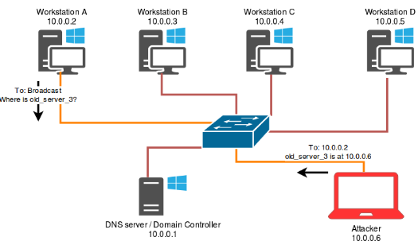

Insecure name resolution protocols
It happens quite regularly that Fox-IT encounters name resolution traffic using insecure protocols. Workstations or servers are often configured to contact hosts which do not exist (anymore) in the network, and/or whose hostnames cannot be resolved using DNS. When this happens, Windows workstations fall back to name resolution protocols such as NBNS and LLMNR, which rely on broadcast traffic to ask hosts in the same network to resolve a hostname to an IP address. Because this traffic can be viewed by all hosts in the same network segment (depending on firewall configuration), any host can reply to the requests. This gives an attacker the opportunity to spoof the address for the requested name. This process is illustrated below.
